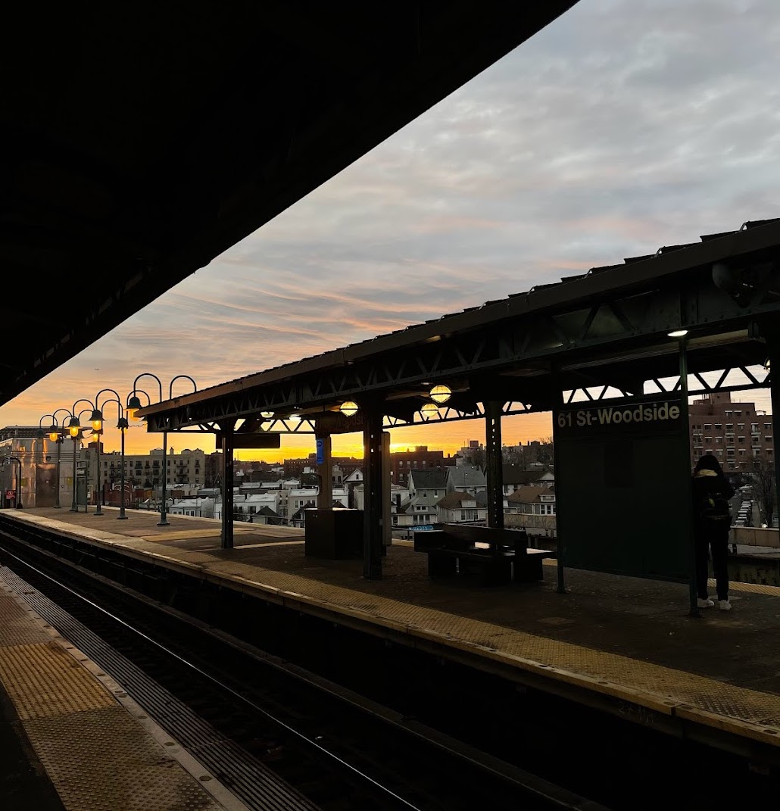
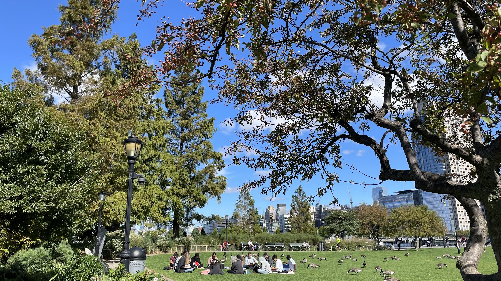
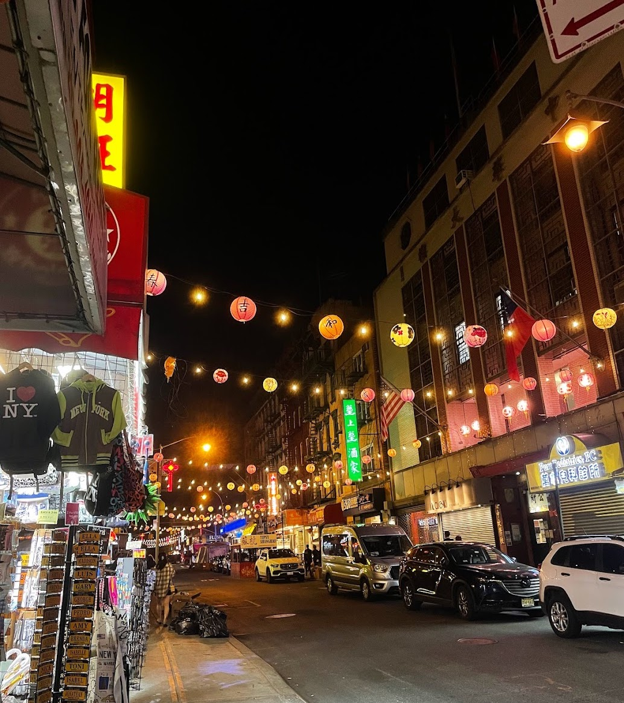

Home
  
The origins of NYC go as far back as Fort Amsterdam and a Dutch trading post in southern Manhattan in 1624. In 1626, the settlement's name was New Amsterdam, and it
became a city in 1653. However, the city fell under British control in 1664; King Charles ll gave the land to his brother, the Duke of York, ultimately changing the name of
the city from New Amsterdam to New York City. New York City was actually the capital of the United States through the years 1785-1790. Ever since NYC was gifted the
Statue of Liberty in 1885, the city has welcomed millions of immigrants to America through Ellis Island, creating the culturally and ethnically diverse NYC that I live in today.